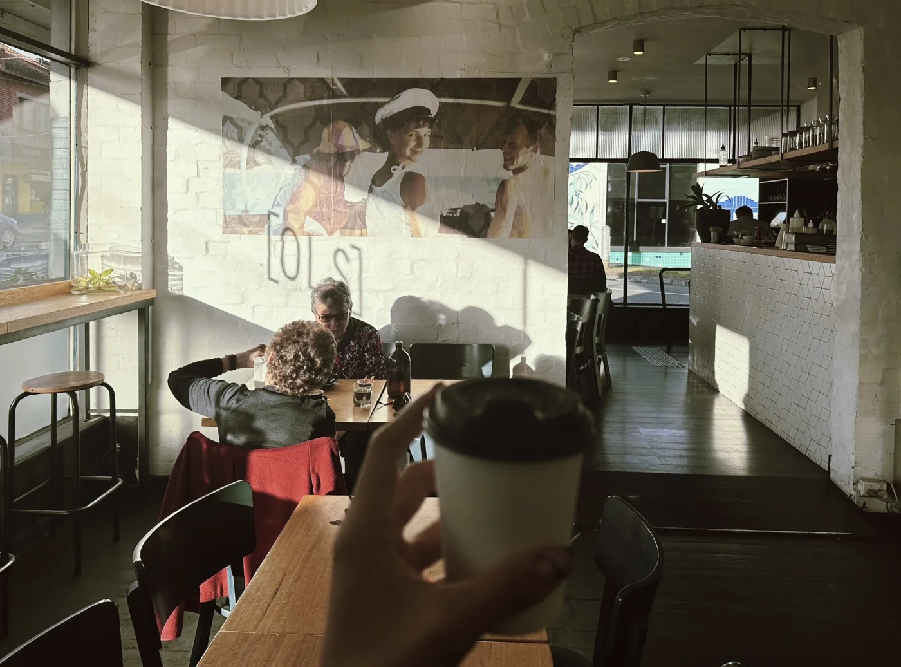
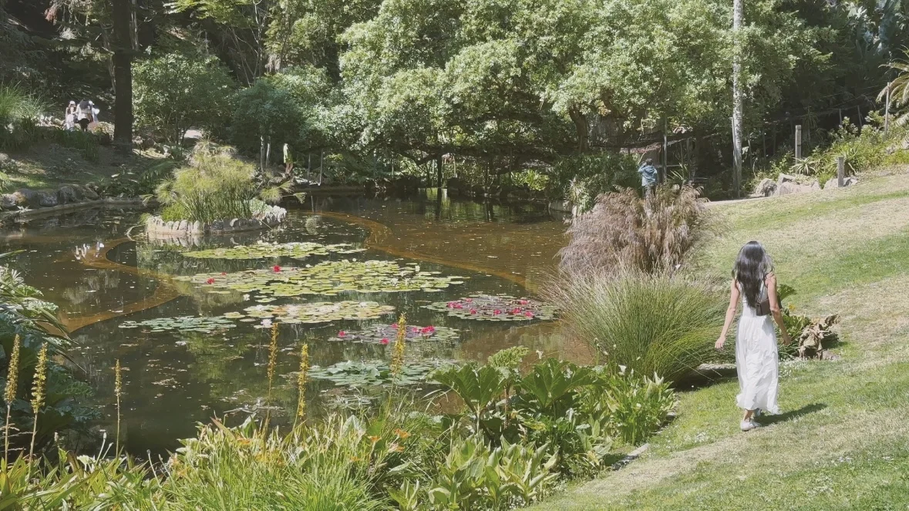

Meditation
Summer 2025
围在城里的人想逃出来，站在城外的人想冲进去，婚姻也罢、事业也罢，人生的欲望大都如此。
Journal
Personal reflections, fragments of thought, and moments along the way.
围在城里的人想逃出来，站在城外的人想冲进去，婚姻也罢、事业也罢，人生的欲望大都如此。


Something.A note in the making